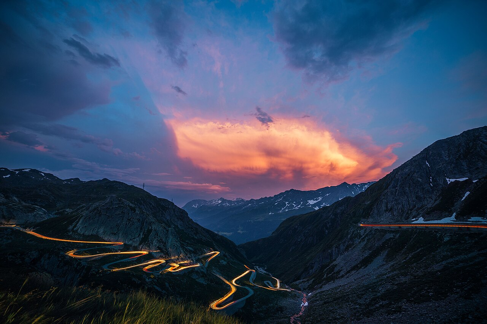
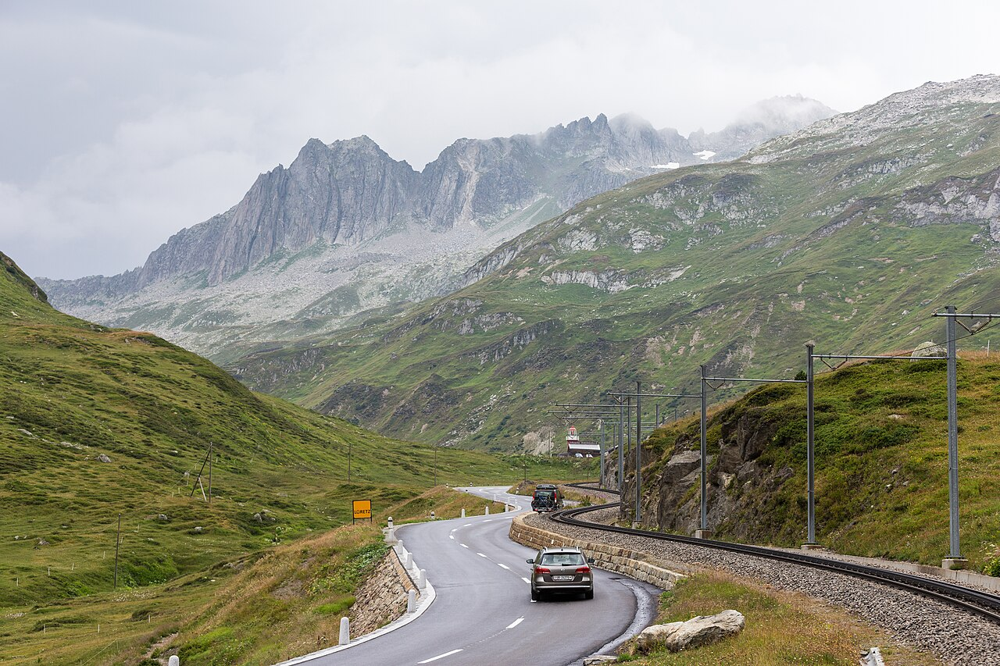
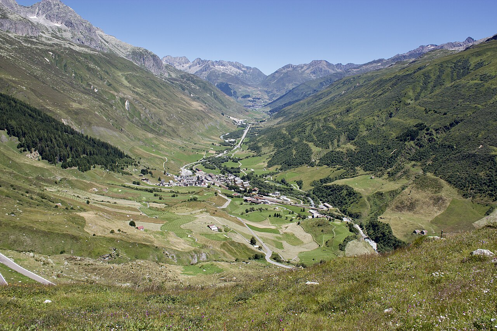
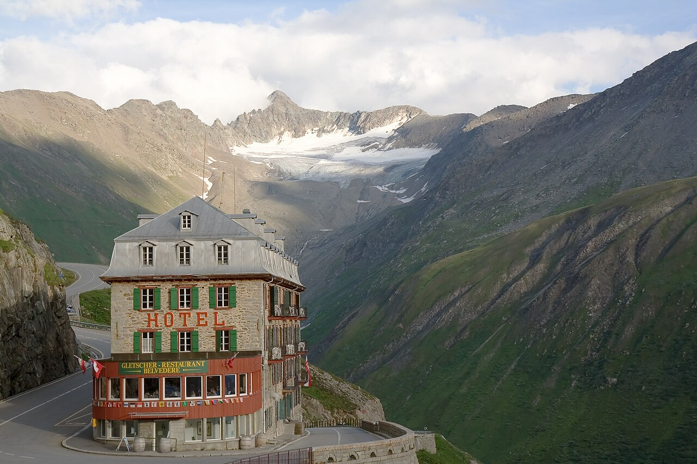

Rad Wochenende Andermatt 24.–28.6.2026
Ein gemütliches Wochenende in Andermatt, an dem wir gemeinsam Radfahren, Spielen und Quatschen oder auch Wandern und Entspannen, je nachdem, wonach es uns gerade ist. Die Anmeldung findest du am Seitenende.




Unterkunft
Wir übernachten im Ferienhaus Im Oltä Stall in Andermatt und haben das ganze Haus für uns. Die Kosten belaufen sich ab einer Mindestanzahl von 20 Personen auf CHF 100 pro Person für das ganze Wochenende. Bei unter 20 Personen erhöht sich der Betrag pro Person abhängig von unserer Gruppengröße.
Zum Oltä Stall ↗